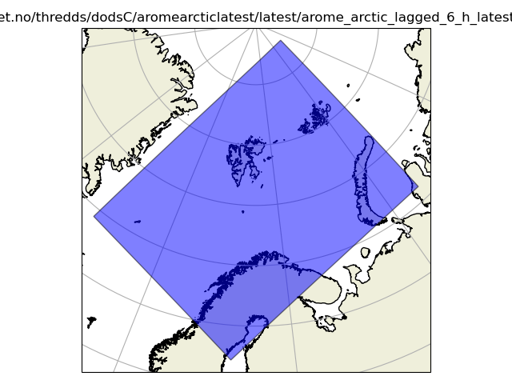
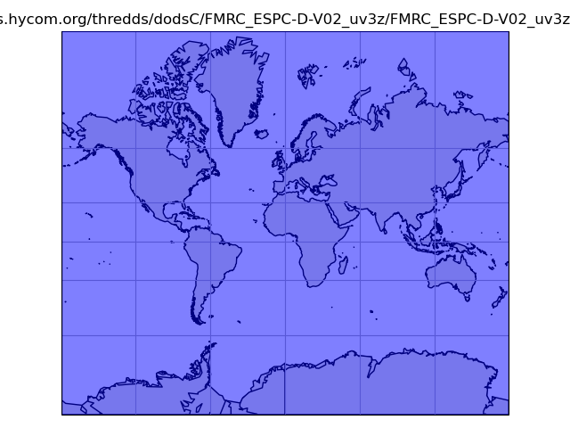

Note
Click here to download the full example code
Thredds resources for GUI
from datetime import datetime
from opendrift.models.oceandrift import OceanDrift
from opendrift.readers.reader_netCDF_CF_generic import Reader
o = OceanDrift(loglevel=0)
thredds_resources = open(o.test_data_folder()+'../../opendrift/scripts/data_sources.txt').readlines()
times = {}
Out:
18:52:01 DEBUG opendrift.models.basemodel: Adding 17 config items from basemodel
18:52:01 DEBUG opendrift.models.basemodel: Adding 5 config items from basemodel
18:52:01 DEBUG opendrift.models.basemodel: Adding 36 config items from basemodel
18:52:01 INFO opendrift.models.basemodel: OpenDriftSimulation initialised (version 1.8.0 / v1.8.0-10-gb6671b3)
18:52:01 DEBUG opendrift.models.basemodel: Adding 14 config items from oceandrift
18:52:01 DEBUG opendrift.models.basemodel: Overwriting config item seed:z
Open each thredds dataset to check contents and spatial coverage
for t in thredds_resources:
if t.startswith('http') and 'nrt.cmems' not in t:
start = datetime.now()
print('\n#%%\n%s\n' % t)
r = Reader(t)
print(r)
ts = str(datetime.now() - start)
times[t] = ts
print('Time to open reader: ', ts)
if r.global_coverage():
lscale = 'coarse'
else:
lscale = 'intermediate'
r.plot(lscale=lscale)


- 

- 
Out:
#%
https://thredds.met.no/thredds/dodsC/sea/norkyst800m/1h/aggregate_be
18:52:01 INFO opendrift.readers.reader_netCDF_CF_generic: Opening dataset: https://thredds.met.no/thredds/dodsC/sea/norkyst800m/1h/aggregate_be
18:52:03 DEBUG opendrift.readers.reader_netCDF_CF_generic: Finding coordinate variables.
18:52:03 DEBUG opendrift.readers.reader_netCDF_CF_generic: Skipped variables without standard_name: ['angle', 'tke', 'ubar', 'vbar']
18:52:03 DEBUG opendrift.readers.basereader.variables: Setting buffer size 25 for reader https://thredds.met.no/thredds/dodsC/sea/norkyst800m/1h/aggregate_be
, assuming a maximum average speed of 5 m/s and time span of 1:00:00
18:52:03 DEBUG opendrift.readers.basereader: Variable mapping: ['sea_floor_depth_below_sea_level'] -> ['land_binary_mask'] is not activated
===========================
Reader: https://thredds.met.no/thredds/dodsC/sea/norkyst800m/1h/aggregate_be
Projection:
+proj=stere +ellps=WGS84 +lat_0=90.0 +lat_ts=60.0 +x_0=3192800 +y_0=1784000 +lon_0=70
Coverage: [degrees]
xmin: 0.000000 xmax: 2080800.000000 step: 800 numx: 2602
ymin: 0.000000 ymax: 720800.000000 step: 800 numy: 902
Corners (lon, lat):
( -1.58, 58.50) ( 23.71, 75.32)
( 9.19, 55.91) ( 38.06, 70.03)
Vertical levels [m]:
[ -0. -3. -10. -15. -25. -50. -75. -100. -150. -200.
-250. -300. -500. -1000. -2000. -3000.]
Available time range:
start: 2017-02-20 00:00:00 end: 2022-01-16 18:00:00 step: 1:00:00
43003 times (3144 missing)
Variables:
sea_floor_depth_below_sea_level
latitude
longitude
x_wind
y_wind
sea_water_salinity
sea_water_temperature
x_sea_water_velocity
eastward_sea_water_velocity
y_sea_water_velocity
northward_sea_water_velocity
upward_sea_water_velocity
sea_surface_elevation
===========================
Time to open reader: 0:00:01.649429
/opt/conda/envs/opendrift/lib/python3.9/site-packages/shapefile.py:391: UserWarning: Shapefile shape has invalid polygon: no exterior rings found (must have clockwise orientation); interpreting holes as exteriors.
warnings.warn('Shapefile shape has invalid polygon: no exterior rings found (must have clockwise orientation); interpreting holes as exteriors.')
#%
https://thredds.met.no/thredds/dodsC/mepslatest/meps_lagged_6_h_latest_2_5km_latest.nc
18:52:05 INFO opendrift.readers.reader_netCDF_CF_generic: Opening dataset: https://thredds.met.no/thredds/dodsC/mepslatest/meps_lagged_6_h_latest_2_5km_latest.nc
18:52:05 DEBUG opendrift.readers.reader_netCDF_CF_generic: Finding coordinate variables.
18:52:05 DEBUG opendrift.readers.reader_netCDF_CF_generic: 30 ensemble members available
18:52:05 DEBUG opendrift.readers.reader_netCDF_CF_generic: Skipped variables without standard_name: ['fog_area_fraction']
18:52:05 DEBUG opendrift.readers.basereader.variables: Setting buffer size 10 for reader https://thredds.met.no/thredds/dodsC/mepslatest/meps_lagged_6_h_latest_2_5km_latest.nc
, assuming a maximum average speed of 5 m/s and time span of 1:00:00
18:52:05 DEBUG opendrift.readers.basereader: Variable mapping: ['sea_floor_depth_below_sea_level'] -> ['land_binary_mask'] is not activated
===========================
Reader: https://thredds.met.no/thredds/dodsC/mepslatest/meps_lagged_6_h_latest_2_5km_latest.nc
Projection:
+proj=lcc +lat_0=63.3 +lon_0=15 +lat_1=63.3 +lat_2=63.3 +no_defs +R=6.371e+06
Coverage: [degrees]
xmin: -1060084.000000 xmax: 1309916.000000 step: 2500 numx: 949
ymin: -1332517.875000 ymax: 1337482.125000 step: 2500 numy: 1069
Corners (lon, lat):
(-18.12, 72.76) ( 54.24, 71.58)
( 0.28, 50.32) ( 33.03, 49.77)
Vertical levels [m]:
Not specified
Available time range:
start: 2022-01-14 16:00:00 end: 2022-01-17 05:00:00 step: 1:00:00
62 times (0 missing)
Variables (30 ensemble members):
longitude
latitude
x_wind
y_wind
air_temperature
relative_humidity
cloud_area_fraction
air_pressure_at_sea_level
precipitation_amount
snowfall_amount
wind_speed_of_gust
===========================
Time to open reader: 0:00:00.810046
#%
https://thredds.met.no/thredds/dodsC/barents25km_agg
18:52:05 INFO opendrift.readers.reader_netCDF_CF_generic: Opening dataset: https://thredds.met.no/thredds/dodsC/barents25km_agg
18:52:07 DEBUG opendrift.readers.reader_netCDF_CF_generic: Finding coordinate variables.
18:52:08 DEBUG opendrift.readers.reader_netCDF_CF_generic: Skipped variables without standard_name: ['angle']
18:52:08 DEBUG opendrift.readers.basereader.variables: Setting buffer size 10 for reader https://thredds.met.no/thredds/dodsC/barents25km_agg
, assuming a maximum average speed of 5 m/s and time span of 1:00:00
18:52:08 DEBUG opendrift.readers.basereader: Variable mapping: ['sea_floor_depth_below_sea_level'] -> ['land_binary_mask'] is not activated
===========================
Reader: https://thredds.met.no/thredds/dodsC/barents25km_agg
Projection:
+proj=lcc +lat_0=77.5 +lon_0=-25 +lat_1=77.5 +lat_2=77.5 +no_defs +R=6.371e+06
Coverage: [degrees]
xmin: 278603.187500 xmax: 2123602.750000 step: 2500 numx: 738
ymin: -897931.625000 ymax: 1472067.625000 step: 2500 numy: 948
Corners (lon, lat):
( 79.56, 87.57) ( 68.83, 71.11)
(-17.96, 69.30) ( 18.62, 62.13)
Vertical levels [m]:
[ -0. -3. -10. -15. -25. -50. -75. -100. -150. -200.
-250. -300. -500. -1000. -2000. -3000.]
Available time range:
start: 2020-06-11 00:00:00 end: 2022-01-16 18:00:00 step: 1:00:00
14035 times (779 missing)
Variables:
sea_floor_depth_below_sea_level
latitude
longitude
sea_binary_mask
ocean_vertical_diffusivity
x_wind
y_wind
sea_ice_area_fraction
sea_ice_thickness
sea_ice_x_velocity
sea_ice_y_velocity
sea_water_salinity
sea_water_temperature
x_sea_water_velocity
y_sea_water_velocity
upward_sea_water_velocity
sea_surface_elevation
===========================
Time to open reader: 0:00:02.196973
#%
https://thredds.met.no/thredds/dodsC/cmems/mywavewam3km/dataset-wam-arctic-1hr3km-be.ncml
18:52:08 INFO opendrift.readers.reader_netCDF_CF_generic: Opening dataset: https://thredds.met.no/thredds/dodsC/cmems/mywavewam3km/dataset-wam-arctic-1hr3km-be.ncml
18:52:13 DEBUG opendrift.readers.reader_netCDF_CF_generic: Finding coordinate variables.
18:52:13 DEBUG opendrift.readers.basereader.variables: Setting buffer size 8 for reader https://thredds.met.no/thredds/dodsC/cmems/mywavewam3km/dataset-wam-arctic-1hr3km-be.ncml
, assuming a maximum average speed of 5 m/s and time span of 1:00:00
18:52:13 DEBUG opendrift.readers.basereader: Variable mapping: ['sea_floor_depth_below_sea_level'] -> ['land_binary_mask'] is not activated
===========================
Reader: https://thredds.met.no/thredds/dodsC/cmems/mywavewam3km/dataset-wam-arctic-1hr3km-be.ncml
Projection:
+proj=stere +lon_0=-45 +lat_0=90 +k=1 +R=6371000 +no_defs
Coverage: [degrees]
xmin: -3600000.000000 xmax: 3798000.000000 step: 3000 numx: 2467
ymin: -4300000.000000 ymax: 2798000.000000 step: 3000 numy: 2367
Corners (lon, lat):
(-172.86, 50.62) ( 81.38, 49.37)
(-84.94, 42.49) ( -3.55, 41.52)
Vertical levels [m]:
Not specified
Available time range:
start: 2017-11-01 00:00:00 end: 2022-01-23 12:00:00 step: 1:00:00
37069 times (0 missing)
Variables:
sea_floor_depth_below_sea_level
longitude
latitude
sea_water_speed
sea_water_to_direction
sea_surface_wave_significant_height
sea_surface_wave_period_at_variance_spectral_density_maximum
sea_surface_wave_mean_period_from_variance_spectral_density_inverse_frequency_moment
sea_surface_wave_mean_period_from_variance_spectral_density_second_frequency_moment
sea_surface_wave_from_direction
sea_surface_wind_wave_significant_height
sea_surface_wind_wave_mean_period
sea_surface_wind_wave_from_direction
sea_ice_area_fraction
sea_surface_primary_swell_wave_significant_height
sea_surface_primary_swell_wave_mean_period
sea_surface_primary_swell_wave_from_direction
sea_surface_secondary_swell_wave_significant_height
sea_surface_secondary_swell_wave_mean_period
sea_surface_secondary_swell_wave_from_direction
sea_ice_thickness
sea_surface_wave_from_direction_at_variance_spectral_density_maximum
sea_surface_wave_stokes_drift_x_velocity
sea_surface_wave_stokes_drift_y_velocity
===========================
Time to open reader: 0:00:05.547431
#%
https://thredds.met.no/thredds/dodsC/cmems/topaz6/dataset-topaz6-arc-15min-3km-be.ncml
18:52:13 INFO opendrift.readers.reader_netCDF_CF_generic: Opening dataset: https://thredds.met.no/thredds/dodsC/cmems/topaz6/dataset-topaz6-arc-15min-3km-be.ncml
18:52:17 DEBUG opendrift.readers.reader_netCDF_CF_generic: Finding coordinate variables.
18:52:18 DEBUG opendrift.readers.basereader.variables: Setting buffer size 4 for reader https://thredds.met.no/thredds/dodsC/cmems/topaz6/dataset-topaz6-arc-15min-3km-be.ncml
, assuming a maximum average speed of 5 m/s and time span of 0:15:00
18:52:18 DEBUG opendrift.readers.basereader: Variable mapping: ['sea_floor_depth_below_sea_level'] -> ['land_binary_mask'] is not activated
===========================
Reader: https://thredds.met.no/thredds/dodsC/cmems/topaz6/dataset-topaz6-arc-15min-3km-be.ncml
Projection:
+proj=stere +lon_0=-45 +lat_0=90 +k=1 +R=6378273 +no_defs
Coverage: [degrees]
xmin: -3600000.000000 xmax: 3797999.954224 step: 2999.88 numx: 2467
ymin: -4300000.000000 ymax: 2797999.954224 step: 2999.88 numy: 2367
Corners (lon, lat):
(-172.86, 50.66) ( 81.38, 49.41)
(-84.94, 42.54) ( -3.55, 41.57)
Vertical levels [m]:
Not specified
Available time range:
start: 2018-01-01 00:00:00 end: 2022-01-22 23:45:00 step: 0:15:00
142368 times (0 missing)
Variables:
longitude
latitude
sea_floor_depth_below_sea_level
x_sea_water_velocity
y_sea_water_velocity
sea_surface_height_above_geoid
===========================
Time to open reader: 0:00:05.191790
#%
https://thredds.met.no/thredds/dodsC/aromearcticlatest/arome_arctic_extracted_2_5km_latest.nc
18:52:18 INFO opendrift.readers.reader_netCDF_CF_generic: Opening dataset: https://thredds.met.no/thredds/dodsC/aromearcticlatest/arome_arctic_extracted_2_5km_latest.nc
18:52:20 DEBUG opendrift.readers.reader_netCDF_CF_generic: Finding coordinate variables.
18:52:20 DEBUG opendrift.readers.reader_netCDF_CF_generic: Skipped variables without standard_name: ['altitude_of_0_degree_isotherm', 'integral_of_surface_downward_latent_heat_evaporation_flux_wrt_time', 'integral_of_surface_downward_latent_heat_sublimation_flux_wrt_time', 'ga_11_253_251_7', 'ga_8_253_251_4', 'ga_1_253_251_7', 'turbulent_kinetic_energy_pl', 'altitude_of_isoTprimW_equal_0', 'x_wind_gust_10m', 'y_wind_gust_10m', 'atmosphere_level_of_neutral_buoyancy', 'fog_area_fraction']
18:52:20 DEBUG opendrift.readers.basereader.variables: Setting buffer size 10 for reader https://thredds.met.no/thredds/dodsC/aromearcticlatest/arome_arctic_extracted_2_5km_latest.nc
, assuming a maximum average speed of 5 m/s and time span of 1:00:00
18:52:20 DEBUG opendrift.readers.basereader.variables: Adding variable mapping: ['wind_speed', 'wind_from_direction'] -> x_wind
18:52:20 DEBUG opendrift.readers.basereader.variables: Adding variable mapping: ['wind_speed', 'wind_from_direction'] -> y_wind
18:52:20 DEBUG opendrift.readers.basereader: Variable mapping: ['sea_floor_depth_below_sea_level'] -> ['land_binary_mask'] is not activated
===========================
Reader: https://thredds.met.no/thredds/dodsC/aromearcticlatest/arome_arctic_extracted_2_5km_latest.nc
Projection:
+proj=lcc +lat_0=77.5 +lon_0=-25 +lat_1=77.5 +lat_2=77.5 +no_defs +R=6.371e+06
Coverage: [degrees]
xmin: 278603.156250 xmax: 2123603.250000 step: 2500 numx: 739
ymin: -897931.562500 ymax: 1472068.500000 step: 2500 numy: 949
Corners (lon, lat):
( 79.56, 87.57) ( 68.83, 71.11)
(-17.96, 69.30) ( 18.62, 62.13)
Vertical levels [m]:
Not specified
Available time range:
start: 2022-01-14 15:00:00 end: 2022-01-17 09:00:00 step: 1:00:00
67 times (0 missing)
Variables:
longitude
latitude
air_temperature
surface_geopotential
liquid_water_content_of_surface_snow
x_wind - derived from ['wind_speed', 'wind_from_direction']
y_wind - derived from ['wind_speed', 'wind_from_direction']
downward_eastward_momentum_flux_in_air
downward_northward_momentum_flux_in_air
specific_humidity
mass_fraction_of_cloud_condensed_water_in_air
mass_fraction_of_cloud_ice_in_air
integral_of_toa_net_downward_shortwave_flux_wrt_time
integral_of_surface_net_downward_shortwave_flux_wrt_time
cloud_area_fraction
mass_fraction_of_snow_in_air
mass_fraction_of_rain_in_air
mass_fraction_of_graupel_in_air
geopotential
integral_of_toa_outgoing_longwave_flux_wrt_time
integral_of_surface_net_downward_longwave_flux_wrt_time
water_evaporation_amount
surface_snow_sublimation_amount
integral_of_surface_downward_sensible_heat_flux_wrt_time
relative_humidity
integral_of_surface_downwelling_shortwave_flux_in_air_wrt_time
integral_of_surface_downwelling_longwave_flux_in_air_wrt_time
rainfall_amount
snowfall_amount
surface_air_pressure
graupel_fall_amount
high_type_cloud_area_fraction
medium_type_cloud_area_fraction
specific_convective_available_potential_energy
low_type_cloud_area_fraction
atmosphere_convective_inhibition
upward_air_velocity
atmosphere_lifting_condensation_level_wrt_surface
atmosphere_boundary_layer_thickness
ertel_potential_vorticity
atmosphere_level_of_free_convection_wrt_surface
air_pressure_at_sea_level
lwe_thickness_of_atmosphere_mass_content_of_water_vapor
wind_from_direction
wind_speed
precipitation_amount
wind_speed_of_gust
x_wind - derived from ['wind_speed', 'wind_from_direction']
y_wind - derived from ['wind_speed', 'wind_from_direction']
===========================
Time to open reader: 0:00:01.397713
#%
https://pae-paha.pacioos.hawaii.edu/thredds/dodsC/ncep_global/NCEP_Global_Atmospheric_Model_best.ncd
18:52:20 INFO opendrift.readers.reader_netCDF_CF_generic: Opening dataset: https://pae-paha.pacioos.hawaii.edu/thredds/dodsC/ncep_global/NCEP_Global_Atmospheric_Model_best.ncd
18:52:21 DEBUG opendrift.readers.reader_netCDF_CF_generic: Finding coordinate variables.
18:52:21 DEBUG opendrift.readers.reader_netCDF_CF_generic: Lon and lat are 1D arrays - using as projection coordinates
18:52:21 DEBUG opendrift.readers.basereader.variables: Setting buffer size 3 for reader https://pae-paha.pacioos.hawaii.edu/thredds/dodsC/ncep_global/NCEP_Global_Atmospheric_Model_best.ncd
, assuming a maximum average speed of 5 m/s and time span of 3:00:00
18:52:21 INFO opendrift.readers.basereader: Variable x_wind will be rotated from eastward_wind
18:52:21 INFO opendrift.readers.basereader: Variable y_wind will be rotated from northward_wind
18:52:21 DEBUG opendrift.readers.basereader: Variable mapping: ['sea_floor_depth_below_sea_level'] -> ['land_binary_mask'] is not activated
===========================
Reader: https://pae-paha.pacioos.hawaii.edu/thredds/dodsC/ncep_global/NCEP_Global_Atmospheric_Model_best.ncd
Projection:
+proj=latlong
Coverage: [degrees]
xmin: 0.000000 xmax: 359.500000 step: 0.5 numx: 720
ymin: -90.000000 ymax: 90.000000 step: 0.5 numy: 361
Corners (lon, lat):
( 0.00, 90.00) (359.50, 90.00)
( 0.00, -90.00) (359.50, -90.00)
Vertical levels [m]:
Not specified
Available time range:
start: 2011-05-06 12:00:00 end: 2022-03-03 05:00:00 step: 3:00:00
31630 times (520 missing)
Variables:
air_pressure_at_sea_level
surface_net_downward_longwave_flux
surface_net_downward_shortwave_flux
precipitation_flux
relative_humidity
surface_temperature
air_temperature
eastward_wind
northward_wind
x_wind
y_wind
===========================
Time to open reader: 0:00:01.660425
/opt/conda/envs/opendrift/lib/python3.9/site-packages/shapefile.py:391: UserWarning: Shapefile shape has invalid polygon: no exterior rings found (must have clockwise orientation); interpreting holes as exteriors.
warnings.warn('Shapefile shape has invalid polygon: no exterior rings found (must have clockwise orientation); interpreting holes as exteriors.')
#%
https://tds.hycom.org/thredds/dodsC/GLBy0.08/latest
18:52:21 INFO opendrift.readers.reader_netCDF_CF_generic: Opening dataset: https://tds.hycom.org/thredds/dodsC/GLBy0.08/latest
18:52:22 DEBUG opendrift.readers.reader_netCDF_CF_generic: Finding coordinate variables.
18:52:22 INFO opendrift.readers.reader_netCDF_CF_generic: Grid coordinates are detected, but proj4 string not given: assuming latlong
18:52:22 DEBUG opendrift.readers.basereader.variables: Setting buffer size 9 for reader https://tds.hycom.org/thredds/dodsC/GLBy0.08/latest
, assuming a maximum average speed of 5 m/s and time span of 3:00:00
18:52:22 INFO opendrift.readers.basereader: Variable x_sea_water_velocity will be rotated from eastward_sea_water_velocity
18:52:22 INFO opendrift.readers.basereader: Variable y_sea_water_velocity will be rotated from northward_sea_water_velocity
18:52:22 DEBUG opendrift.readers.basereader: Variable mapping: ['sea_floor_depth_below_sea_level'] -> ['land_binary_mask'] is not activated
===========================
Reader: https://tds.hycom.org/thredds/dodsC/GLBy0.08/latest
Projection:
+proj=latlong
Coverage: [degrees]
xmin: 0.000000 xmax: 359.920044 step: 0.0799561 numx: 4502
ymin: -80.000000 ymax: 90.000000 step: 0.0400009 numy: 4250
Corners (lon, lat):
( 0.00, 90.00) (359.92, 90.00)
( 0.00, -80.00) (359.92, -80.00)
Vertical levels [m]:
[ -0. -2. -4. -6. -8. -10. -12. -15. -20. -25.
-30. -35. -40. -45. -50. -60. -70. -80. -90. -100.
-125. -150. -200. -250. -300. -350. -400. -500. -600. -700.
-800. -900. -1000. -1250. -1500. -2000. -2500. -3000. -4000. -5000.]
Available time range:
start: 2022-01-08 12:00:00 end: 2022-01-21 00:00:00 step: 3:00:00
101 times (0 missing)
Variables:
eastward_sea_water_velocity
eastward_sea_water_velocity_at_bottom
northward_sea_water_velocity
northward_sea_water_velocity_at_bottom
sea_surface_elevation
sea_water_temperature
sea_water_temperature_at_bottom
sea_water_salinity
sea_water_salinity_at_bottom
x_sea_water_velocity
y_sea_water_velocity
===========================
Time to open reader: 0:00:00.399164
#%
https://tds.hycom.org/thredds/dodsC/GLBy0.08/expt_93.0/uv3z
18:52:22 INFO opendrift.readers.reader_netCDF_CF_generic: Opening dataset: https://tds.hycom.org/thredds/dodsC/GLBy0.08/expt_93.0/uv3z
18:52:22 DEBUG opendrift.readers.reader_netCDF_CF_generic: Finding coordinate variables.
18:52:22 INFO opendrift.readers.reader_netCDF_CF_generic: Grid coordinates are detected, but proj4 string not given: assuming latlong
18:52:22 DEBUG opendrift.readers.basereader.variables: Setting buffer size 9 for reader https://tds.hycom.org/thredds/dodsC/GLBy0.08/expt_93.0/uv3z
, assuming a maximum average speed of 5 m/s and time span of 3:00:00
18:52:22 INFO opendrift.readers.basereader: Variable x_sea_water_velocity will be rotated from eastward_sea_water_velocity
18:52:22 INFO opendrift.readers.basereader: Variable y_sea_water_velocity will be rotated from northward_sea_water_velocity
18:52:22 DEBUG opendrift.readers.basereader: Variable mapping: ['sea_floor_depth_below_sea_level'] -> ['land_binary_mask'] is not activated
===========================
Reader: https://tds.hycom.org/thredds/dodsC/GLBy0.08/expt_93.0/uv3z
Projection:
+proj=latlong
Coverage: [degrees]
xmin: 0.000000 xmax: 359.920044 step: 0.0799561 numx: 4502
ymin: -80.000000 ymax: 90.000000 step: 0.0400009 numy: 4250
Corners (lon, lat):
( 0.00, 90.00) (359.92, 90.00)
( 0.00, -80.00) (359.92, -80.00)
Vertical levels [m]:
[ -0. -2. -4. -6. -8. -10. -12. -15. -20. -25.
-30. -35. -40. -45. -50. -60. -70. -80. -90. -100.
-125. -150. -200. -250. -300. -350. -400. -500. -600. -700.
-800. -900. -1000. -1250. -1500. -2000. -2500. -3000. -4000. -5000.]
Available time range:
start: 2018-12-04 12:00:00 end: 2022-01-14 09:00:00 step: 3:00:00
9096 times (7 missing)
Variables:
eastward_sea_water_velocity
eastward_sea_water_velocity_at_bottom
northward_sea_water_velocity
northward_sea_water_velocity_at_bottom
x_sea_water_velocity
y_sea_water_velocity
===========================
Time to open reader: 0:00:00.420086
Summary of times to open each dataset:
for t, time in times.items():
print(time, t)
Out:
0:00:01.649429 https://thredds.met.no/thredds/dodsC/sea/norkyst800m/1h/aggregate_be
0:00:00.810046 https://thredds.met.no/thredds/dodsC/mepslatest/meps_lagged_6_h_latest_2_5km_latest.nc
0:00:02.196973 https://thredds.met.no/thredds/dodsC/barents25km_agg
0:00:05.547431 https://thredds.met.no/thredds/dodsC/cmems/mywavewam3km/dataset-wam-arctic-1hr3km-be.ncml
0:00:05.191790 https://thredds.met.no/thredds/dodsC/cmems/topaz6/dataset-topaz6-arc-15min-3km-be.ncml
0:00:01.397713 https://thredds.met.no/thredds/dodsC/aromearcticlatest/arome_arctic_extracted_2_5km_latest.nc
0:00:01.660425 https://pae-paha.pacioos.hawaii.edu/thredds/dodsC/ncep_global/NCEP_Global_Atmospheric_Model_best.ncd
0:00:00.399164 https://tds.hycom.org/thredds/dodsC/GLBy0.08/latest
0:00:00.420086 https://tds.hycom.org/thredds/dodsC/GLBy0.08/expt_93.0/uv3z
Total running time of the script: ( 1 minutes 13.161 seconds)